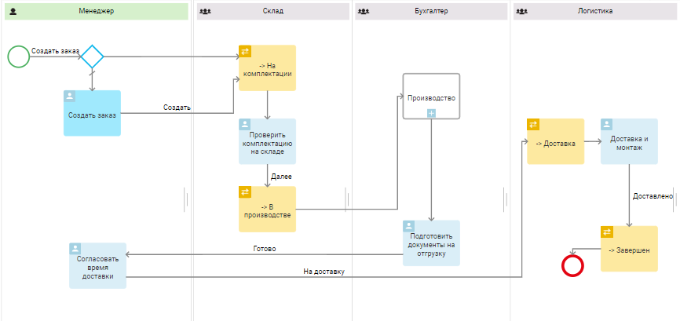
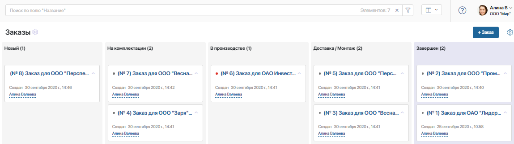
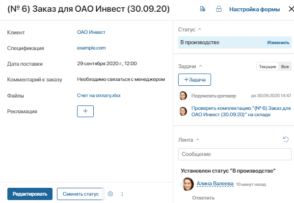
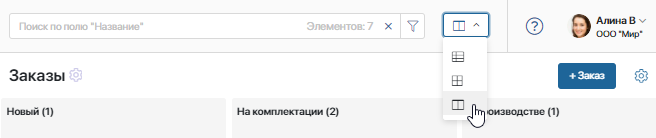
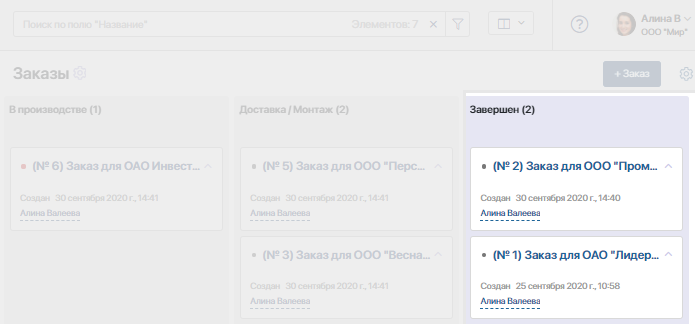
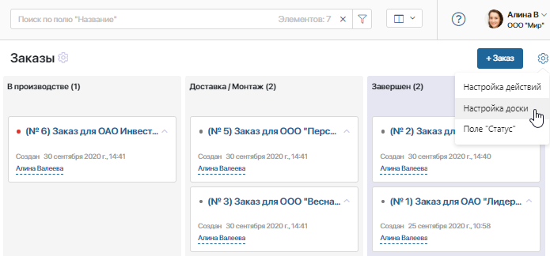
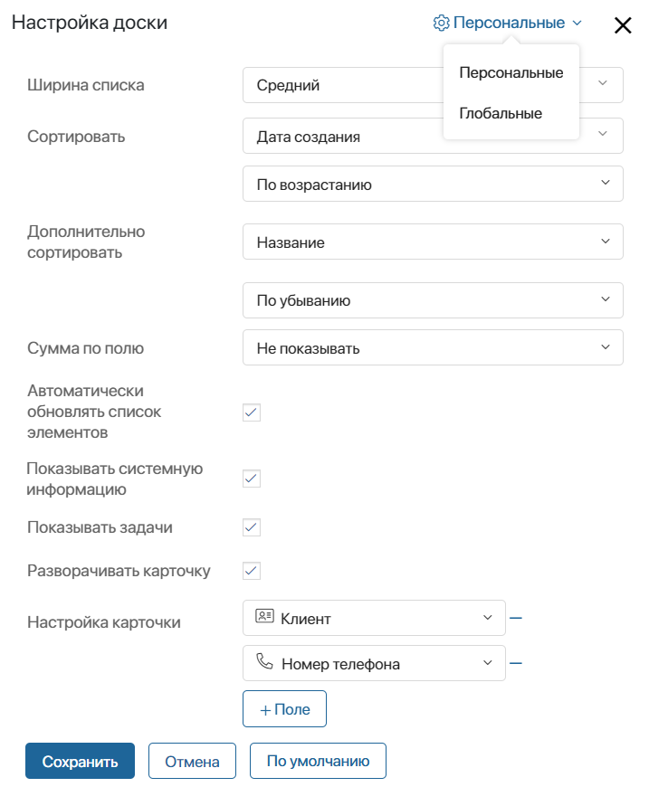
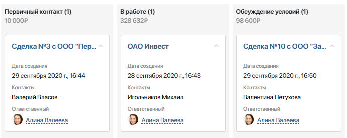
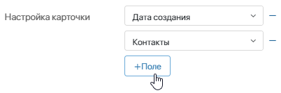
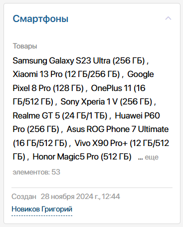

В ELMA365 канбан-доска помогает отслеживать текущее состояние бизнес-процессов и этапы их исполнения. Например, можно посмотреть, сколько заказов обрабатывается в данный момент, на какой стадии находится каждый из них, и есть ли просроченные задачи по заказам.
Как правильно использовать канбан
Для начала следует создать бизнес-процесс, который будет описывать поведение приложения. Например, для приложения Заказ описывается вся последовательность шагов сотрудников, начиная с обработки обращения и заканчивая доставкой товара клиенту.
Затем необходимо настроить статусы заказа и добавить их в процесс. Например, На комплектации, В производстве, Доставка/Монтаж и Завершён.

По мере исполнения процесса заказ автоматически будет менять статус и перемещаться по доске слева направо. С помощью цветовых маркеров на доске можно контролировать сроки выполнения задач по заказу: серая точка означает, что задача не просрочена, жёлтая точка — до конца срока исполнения задачи осталось меньше суток, красная точка отмечает просроченные задачи.

Сама задача, ответственный пользователь и текущий статус элемента указаны в его карточке на правой панели.

Как настроить канбан-представление
Перейдите на страницу приложения. В правом верхнем углу выберите способ отображения Канбан-доска.

Каждая колонка доски соответствует определённому статусу приложения. У колонок с финальным статусом цвет фона отличается.

По мере выполнения бизнес-процесса элемент меняет статус и автоматически перемещается по доске.
Карточки элементов на доске можно разворачивать, чтобы увидеть более полную информацию.
При нажатии на название колонки канбан-доски открываются отсортированные по статусу элементы приложений в виде таблицы.
Если разрешена ручная смена статусов, пользователи могут перетаскивать элементы из одной колонки в другую. Но мы не рекомендуем такой сценарий использования для обеспечения наибольшего контроля и прозрачности.
начало внимание
Перетаскивать элементы могут только пользователи, обладающие правами на редактирование элемента.
конец внимание
Настройки доски
Чтобы настроить канбан-доску, нажмите на значок шестерёнки в правом верхнем углу страницы приложения и выберите пункт Настройка доски.

Откроется окно, где вы можете настроить как саму доску, так и карточки элементов. Настройки доски делятся на два типа:
- глобальные — администратор системы задаёт настройки, которые применяются по умолчанию для всех сотрудников и экспортируются вместе с приложением;
- персональные — любой пользователь может задать параметры для себя. При этом всегда можно вернуться к глобальным настройкам, нажав кнопку По умолчанию.
Администратор может переключаться между глобальными и персональными параметрами вверху окна настройки.

Чтобы изменить настройки канбан-доски, заполните поля:
- Ширина списка — выберите ширину колонок;
- Сортировать — определите, по какому параметру будут сортироваться элементы в колонках. Доступны системные поля приложения, такие как Индекс и Дата создания, а также свойства, для которых администратор системы включил опцию Поиск и сортировка по полю. По умолчанию элементы сортируются по дате создания. После выбора поля укажите тип сортировки: по убыванию или по возрастанию;
- Дополнительно сортировать — выберите параметр, по которому будет осуществляться вторичная сортировка элементов. Например, если элементы приложения изначально сортируются по названию и среди них есть одноимённые элементы, вы можете установить для них дополнительную сортировку по дате создания. Для выбора доступны системные поля, а также свойства с включённой опцией Поиск и сортировка по полю;
- Сумма по полю — выберите поле приложения с типом данных Деньги или Число, например, Сумма по договору. Тогда рядом с названием каждой колонки пользователи увидят общую сумму по всем элементам, на просмотр которых имеют права доступа;

- Автоматически обновлять список элементов — включите опцию, чтобы список обновлялся при добавлении новых элементов, а также внесении изменений в существующие элементы;
- Показывать системную информацию — установите флажок, чтобы в карточке элемента приложения отображалась информация об авторе и дате создания элемента;
- Показывать задачи — выберите эту опцию, чтобы в карточке на доске отображались текущие задачи по бизнес‑процессу;
- Разворачивать карточку — по умолчанию карточки на доске отображаются в свёрнутом виде. Включите эту опцию, чтобы в карточках показывались все выбранные вами поля приложения;
- Настройка карточки — укажите поля приложения, которые будут отображаться на карточке. По умолчанию указано два поля, значения которых вы можете поменять, выбрав их из выпадающего списка. Чтобы добавить ещё одно поле, нажмите + Поле, а затем выберите нужное значение из списка. Обратите внимание, выбранные поля будут отображаться на карточках всех элементов приложения.

Чтобы удалить поле, нажмите на минус справа от его названия.
Особенности отображения на доске полей типа Приложение (несколько)
Вы можете добавить на доску поле типа Приложение (несколько). Тогда в карточке каждого элемента текущего приложения вы увидите ссылки на связанные элементы другого приложения. Если таких элементов много, отобразятся ссылки на первые 10 из них и их общее количество.  Однако данные по всем связанным элементам выбранного приложения всё равно загружаются, что может создавать дополнительную нагрузку на систему. Чтобы ускорить отображение и снизить нагрузку, администратор системы может включить жадную загрузку данных. В этом случае данные загружаются только по первым 10 элементам, и их общее количество не указывается. |
После заполнения всех полей нажмите кнопку Сохранить.